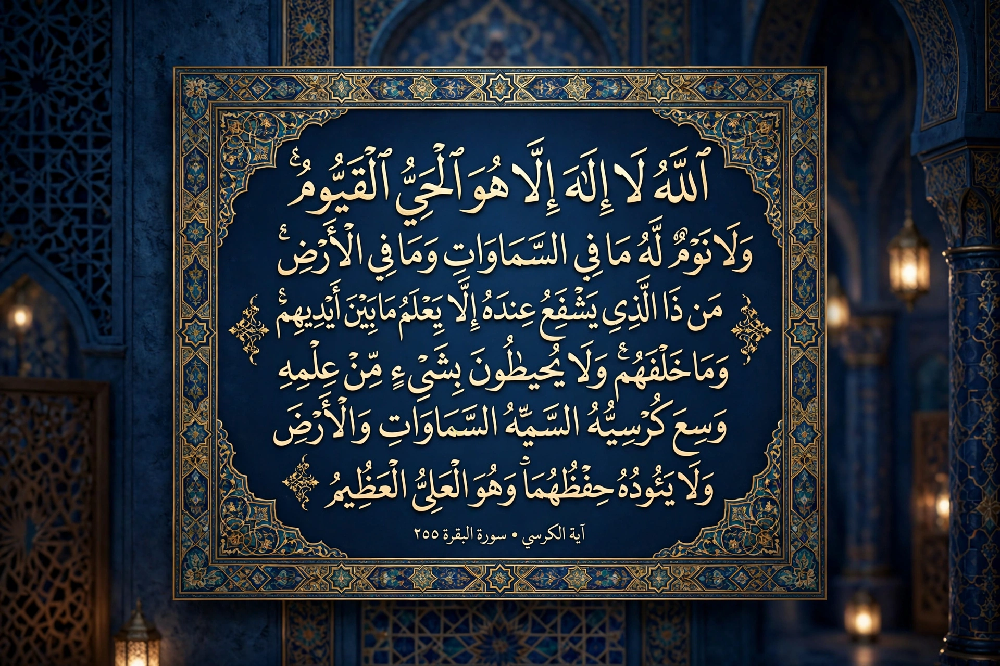

Āyat al-Kursī (Arabic: آية الكرسي, 'the Throne Verse') is verse 255 of the second chapter (surah) of the Quran, Al-Baqara. It is widely regarded in Islamic tradition as the greatest verse of the Quran, a majestic statement of God's sovereignty, knowledge, and eternal life.

The verse begins "Allah — there is no god but He, the Ever-Living, the Sustainer of all existence. Neither drowsiness nor sleep overtakes Him…" It proclaims God's ownership of heaven and earth, the vastness of His Kursi (throne/footstool), and that He is never wearied by preserving creation.
Hadith literature praises reciting it after each prayer and before sleep for protection. It is among the most memorised and calligraphically displayed Quranic passages, inscribed on mosques, amulets, and homes, and figures prominently in exegesis and theology debates about divine attributes.
Al-Baqara · Quran · Throne of God
Recreated from memory.